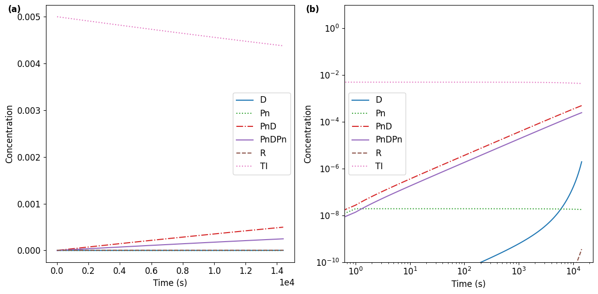
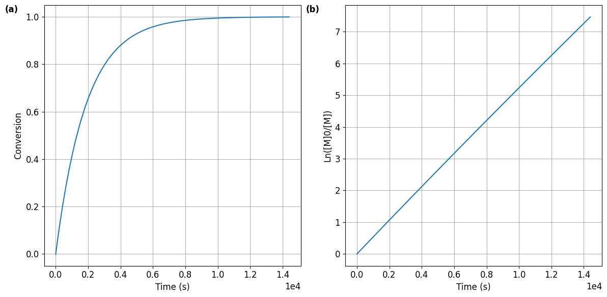
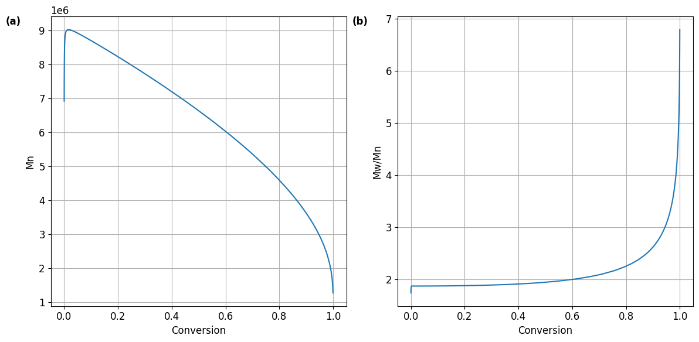

#@title { display-mode: "form" }
%%capture
import sys
if not 'chempy' in sys.modules:
!pip install chempy
from chempy import ReactionSystem, Substance
from chempy.kinetics.ode import get_odesys
from collections import defaultdict
import numpy as np
import matplotlib.pyplot as plt
plt.rcParams.update({'font.size': 12}) # Feel free to change the font size in the plots.
from ipywidgets import interact
import datetime
import csv
density = {'St': 0.909, 'MMA':0.940, 'MA':0.950, 'VAc':0.934, 'AN':0.810} # g/mL
molar_mass ={'St': 104.15, 'MMA': 100.12, 'MA':86.09, 'VAc':86.09, 'AN':53.06} # g/mol
# Propagation rate coefficients of monomers.
# For AN, 'Determination of the propagation rate coefficient of acrylonitrile' Polym. Chem., 2010,1, 438-441, DOI: 10.1039/C0PY00019A
# For the rest, "Rate coefficients of free-radical polymerization deduced from pulsed laser experiments" Prog. Polym. Sci., 2002, 27, 191-254, DOI: 10.1016/S0079-6700(01)00049-1
kp_Ea = {'St':31.5, 'MMA': 22.4, 'MA': 17.7, 'VAc': 20.7, 'AN': 14.4} # kJ/mol
kp_A = {'St':2.88e7, 'MMA':2.67e6, 'MA':1.66e7, 'VAc':1.47e7, 'AN': 1.79e6} # /mol.s
# Decomposition rate coefficients of initiators.
# For AIBN, ACHN, VR-110, "A Critical Assessment of the Kinetics and Mechanism of Initiation of Radical Polymerization with Commercially Available Dialkyldiazene Initiators" Prog. Polym. Sci. 2019, 88, 130-188, DOI: 10.1016/j.progpolymsci.2018.08.003
# For BPO, it is calculated from Sigma Aldrich "Applications: Free Radical Initiators"
kd_Ea = {'AIBN':131, 'BPO': 141, 'ACHN': 150, 'VR-110': 147}
kd_A = {'AIBN':3.2e15, 'BPO': 3.4e16, 'ACHN': 7.9e16, 'VR-110': 2.0e15}1. Import packages and set the values of parameters
2. Select reaction conditions
Compounds used in this simulator:

#@title { display-mode: "form" }
Poly_type = "conven"
#@markdown ###2.1. Choose the monomer and set the volume fraction of the monomer
#@markdown **St**: styrene; **MMA**: methyl methacrylate; **MA**: methyl acrylate; **VAc**: vinyl acetate; **AN**: acrylonitrile
Monomer = "MA" #@param ["St", "MMA", "MA", "VAc", "AN"]
Fraction_of_Monomer = 1 #@param {type:"slider", min:0, max:1, step:0.01}
#@markdown Suppose you want to do bulk polymerization, you can set the fraction as 1. If you want to do a solution polymerization with half monomer and half solvent by volume, then set the fraction as 0.5. Solvent effect on reaction rate is not taken into account, thus there is no need to select a specific solvent for the simulation.
#@markdown ###2.2. Choose the thermal initiator (TI) and set the concentration (mol/L)
#@markdown **AIBN**: azobis(isobutyronitrile); **BPO**: benzoyl peroxide; **ACHN**: 1,1’-azobis-(1-cyclohexanenitrile); **VR-110**: 2,2'-Azobis(2,4,4-trimethylpentane)
TI = "AIBN" #@param ["AIBN", "BPO", "ACHN", "VR-110"]
c0_TI = 0.005 #@param {type:"slider", min:0, max:0.1, step:0.001}
#@markdown ###2.3. Select the reaction temperature ($^\circ$C) and reaction time (h)
Temperature = 60 #@param {type:"slider", min:0, max:130, step:1}
Temperature = Temperature + 273.15
react_time = 4 #@param {type:"slider", min:0, max:72, step:0.1}
react_time = react_time*3600
#@markdown Be careful of the bolling temperatures of the monomers (styrene 145 $^\circ$C, MMA 101 $^\circ$C, MA 80 $^\circ$C, VAc 72 $^\circ$C, AN 77$^\circ$C). Choosing a temperature above the boiling point will cause some problems in the real world experiments.
# Rate coefficient of decomposition of the initiator
k_d_TI = kd_A[TI]*np.exp(-kd_Ea[TI]*1000/8.314/Temperature)
# Initiation efficiency
f_TI = 0.8
# Propagation rate coefficient
k_p = kp_A[Monomer]*np.exp(-kp_Ea[Monomer]*1000/8.314/Temperature)
# Initial monomer concentration
c0_M = density[Monomer]*1000/molar_mass[Monomer]*Fraction_of_Monomer
MM = molar_mass[Monomer]
# Rate coefficient of termination between propagating chains
k_tc = 5e7 # Termination by coupling
k_td = 5e7 # Termination by disproportionation
# Self initiation of the monomer, only styrene needs to be considered.
if Monomer == "styrene":
k_th_S = 2.2e5*np.exp(-13810/Temperature)
else:
k_th_S = 0
# Set the rate coefficients for the addition of the first monomer to the primary radical;
k_p_R = k_p
# the termination between primary radicals; the termination between a primary radical and a propagating radical.
k_t_R = 2.5e9
k_t_R_Pn = 1e8 3. Construct the reaction system
#@title { display-mode: "form" }
# Initiate the reaction system with null value.
# The rsys_orig is the system of the actual reactions.
# The rsys_pseudo includes the pseudo reactions with pseudo species
# which are used to introduce 1st and 2nd order moments
# and to adjust the reactions to take into account the initiation efficiency, etc.
rsys_orig = ReactionSystem.from_string("""
""", substance_factory=Substance)
rsys_pseudo = ReactionSystem.from_string("""
""", substance_factory=Substance)
# Initial concentrations of monomer, dead chains, radicals, and pseudo species of moments.
c0 = defaultdict(float, {'M': c0_M, 'D': 0, 'PnD': 0, 'PnDPn': 0, 'R': 0, 'Pn': 0, 'M1_Pn': 0, \
'M1_PnD': 0, 'M1_PnDPn': 0, 'M2_total': 0})
# Add propagation and termination reactions to the reaction system.
rsys_orig += ReactionSystem.from_string(f"""
R + M -> Pn; {k_p_R}
Pn + M -> Pn; {k_p}
R + R -> D + D; {k_t_R}
Pn + R -> PnD + D; {k_t_R_Pn}
Pn + Pn -> PnD + PnD; {k_td}
Pn + Pn -> PnDPn; {k_tc}
""", substance_factory=Substance)
rsys_pseudo += ReactionSystem.from_string(f"""
R + M -> R + M + M1_Pn + M2_total; {k_p_R}
Pn + M -> Pn + M + M1_Pn + M2_total; {k_p}
M1_Pn + M -> M1_Pn + M + M2_total; {2*k_p}
M1_Pn + R -> M1_PnD + R; {k_t_R_Pn}
M1_Pn + Pn -> M1_PnD + Pn; {2*k_td}
M1_Pn + Pn -> M1_PnDPn + Pn; {2*k_tc}
M1_Pn + M1_Pn -> M1_Pn + M1_Pn + M2_total; {2*k_tc}
""", substance_factory=Substance)
# To include the thermal initiaion for styrenic monomers
if k_th_S != 0:
rsys_orig += ReactionSystem.from_string(f"""
M + M + M -> R + R; {k_th_S}
""", substance_factory=Substance)
# The thermal initiator is consumed with a rate coefficient k_d_TI;
# however, not all of the primary radicals would involve in propagation.
# To take into account the initiation efficiency, pseudo reactions and a pseudo species 'PR' are introduced.
c0.update({'TI': c0_TI, 'PR': 0})
rsys_orig += ReactionSystem.from_string(f"""
TI -> R + R; {k_d_TI}
""", substance_factory=Substance)
rsys_pseudo += ReactionSystem.from_string(f"""
TI -> R + R; {-k_d_TI}
TI -> PR + PR; {k_d_TI}
TI -> TI + R + R; {f_TI*k_d_TI}
""", substance_factory=Substance)
# List the initial concentrations of reagents
print("The reagents and their concentrations (mol/L) are as follows:")
for key in c0:
if c0[key] != 0:
print(key, ': ', c0[key])
print("where 'M' means the monomer, 'TI' means the thermal initiator.")
# Show the reactions and the rate coefficients in the system
print("The reactions involved are listed below with their rate coefficients.")
rsys_origThe reagents and their concentrations (mol/L) are as follows:
M : 11.034963410384481
TI : 0.005
where 'M' means the monomer, 'TI' means the thermal initiator.
The reactions involved are listed below with their rate coefficients.| M + R | → | Pn | 27850 | |
| M + Pn | → | Pn | 27850 | |
| 2 R | → | 2 D | 2.5⋅109 | |
| Pn + R | → | D + PnD | 108 | |
| 2 Pn | → | 2 PnD | 5⋅107 | |
| 2 Pn | → | PnDPn | 5⋅107 | |
| TI | → | 2 R | 9.2235⋅10-6 | |
4. Simulation
List of the differential equations
#@title { display-mode: "form" }
# Combine the actual and the pseudo reaction systems
rsys = rsys_orig + rsys_pseudo
# Get the differential equation system from the reactions.
odesys, extra = get_odesys(rsys)
# List the differential equations
for index, exp in enumerate(odesys.exprs):
if odesys.names[index] != 'PR':
print(odesys.names[index], ': ', f'dy_{index}/dt', '= ', exp)D : dy_0/dt = 100000000.0*y_2*y_5 + 5000000000.0*y_5**2
M : dy_1/dt = -27849.8025138658*y_1*y_2 - 27849.8025138658*y_1*y_5
Pn : dy_2/dt = 27849.8025138658*y_1*y_5 - 200000000.0*y_2**2 - 100000000.0*y_2*y_5
PnD : dy_3/dt = 100000000.0*y_2**2 + 100000000.0*y_2*y_5
PnDPn : dy_4/dt = 50000000.0*y_2**2
R : dy_5/dt = -27849.8025138658*y_1*y_5 - 100000000.0*y_2*y_5 - 5000000000.0*y_5**2 + 1.47576729074005e-5*y_6
TI : dy_6/dt = -9.22354556712529e-6*y_6
M1_Pn : dy_7/dt = 27849.8025138658*y_1*y_2 + 27849.8025138658*y_1*y_5 - 200000000.0*y_2*y_7 - 100000000.0*y_5*y_7
M1_PnD : dy_8/dt = 100000000.0*y_2*y_7 + 100000000.0*y_5*y_7
M1_PnDPn : dy_9/dt = 100000000.0*y_2*y_7
M2_total : dy_10/dt = 27849.8025138658*y_1*y_2 + 27849.8025138658*y_1*y_5 + 55699.6050277317*y_1*y_7 + 100000000.0*y_7**2The differential equation system includes not only the real species, i.e., those taht appear in the actual reactions, but also the pseudo species, e.g., the 1st and 2nd order moments.
#@title { display-mode: "form" }
# Integration
tout = sorted(np.concatenate((np.linspace(0, react_time), np.logspace(0, np.floor(np.log10(react_time))))))
result = odesys.integrate(tout, c0, integrator='scipy', method='lsoda', atol=1e-12, rtol=1e-6)5. Results
5.1. Concentration changes
#@title { display-mode: "form" }
# Plot the concentrations of species in the reaction system vs time.
# The change of monomer concentration is not included here since monomer conversion will be plotted later.
labels=['(a)','(b)','(c)']
i=0
fig1, axes = plt.subplots(1, 2, figsize=(12, 6))
for ax in axes:
_ = result.plot(names=[k for k in rsys_orig.substances if k != 'CuIsour' \
and k != 'M' and k!= 'elec' and k != 'Cu0'], ax=ax)
_ = ax.legend(loc='best',prop={'size': 12}) # Set the font size of the legend here.
_ = ax.set_xlabel('Time (s)')
_ = ax.set_ylabel('Concentration')
_ = ax.text(-0.1, 1, labels[i], transform=ax.transAxes, fontweight='bold', va='top', ha='right')
i+=1
axes[0].ticklabel_format(axis="x", style="sci", scilimits=(0,0))
_ = axes[1].set_ylim([1e-10, 1e1])
_ = axes[1].set_xscale('log')
_ = axes[1].set_yscale('log')
_ = fig1.tight_layout()
Meanings of the species produced during the polymerization
R: primary radical either from the thermal initiator
D: termination product from primary radicals
Pn: propagating polymer chain with a chain end radical
PnD: dead polymer chain produced by termination through disproportionation
PnDPn: dead polymer chain produced by termination through coupling
Note: The choice of monomer affects the relative reaction rates of termination by coupling and disproportionation. Additionally, the rate coefficients of termination change with chain length and viscosity. Considering all these factors can be very complicated. To keep things simple for educational purposes, this simulator sets the rate coefficients of termination as constants.
5.2. Monomer conversion vs time
#@title { display-mode: "form" }
# Get concentrations and calculate conversion, Mn and Mw/Mn.
ConcM = result[1][:,result.odesys.names.index('M')]
ConcD = result[1][:,result.odesys.names.index('D')]
ConcPnD = result[1][:,result.odesys.names.index('PnD')]
ConcPnDPn = result[1][:,result.odesys.names.index('PnDPn')]
ConcPn = result[1][:,result.odesys.names.index('Pn')]
ConcM2_total = result[1][:,result.odesys.names.index('M2_total')]
ConvM =(ConcM[0]-ConcM)/ConcM[0]
LnM0_M = np.log(ConcM[0]/ConcM)
Mn = np.zeros(len(result[0]))
Mw = np.zeros(len(result[0]))
Mw_Mn = np.ones(len(result[0]))
Mn[1:] = (ConcM[0]-ConcM[1:])/(ConcPnD[1:] + ConcPnDPn[1:] + ConcPn[1:])*MM
Mw[1:] = ConcM2_total[1:]/(ConcM[0]-ConcM[1:])*MM
Mw_Mn[1:] = Mw[1:]/Mn[1:]
result_cal = [result[0],ConcM,ConvM,LnM0_M,Mn,Mw_Mn]#@title { display-mode: "form" }
# Monomer conversion vs. time and first order kinetic plots.
fig2, axes = plt.subplots(1, 2, figsize=(12, 6))
i=0
for ax in axes:
ax.ticklabel_format(axis="x", style="sci", scilimits=(0,0))
_ = ax.plot(result_cal[0], result_cal[i+2])
_ = ax.text(-0.1, 1, labels[i], transform=ax.transAxes, fontweight='bold', va='top', ha='right')
_ = ax.grid()
i += 1
_ = axes[0].set(xlabel = 'Time (s)', ylabel='Conversion')
_ = axes[1].set(xlabel = 'Time (s)', ylabel='Ln([M]0/[M])')
_ = fig2.tight_layout()
5.3. Molecular weight and molecular weight distribution.
#@title { display-mode: "form" }
# Plot Mn, Mw/Mn and Tmol% vs. conversion.
fig3, axes = plt.subplots(1, 2, figsize=(12, 6))
i=0
for ax in axes:
_ = ax.plot(result_cal[2][1:], result_cal[i+4][1:])
_ = ax.text(-0.1, 1, labels[i], transform=ax.transAxes, fontweight='bold', va='top', ha='right')
_ = ax.grid()
i += 1
_ = axes[0].set(xlabel = 'Conversion', ylabel='Mn')
axes[0].ticklabel_format(axis="y", style="sci", scilimits=(0,0))
_ = axes[1].set(xlabel = 'Conversion', ylabel='Mw/Mn')
_ = fig3.tight_layout()
6. Export the results
#@title Export the result to a CSV file { display-mode: "form" }
# If you run this program on your own computer, the CSV file is saved in the same folder as this ipynb file.
# If you run this program online at https://colab.research.google.com/,
# you can find the a menu bar on the left side.
# Click on the fourth one called "Files" and you will see the exported files.
now = datetime.datetime.now()
filename = f'{now.strftime("%Y-%m-%d-%Hh%Mm%Ss")}-ConvenRadicalPolymerization-Simulation-{Monomer}-{TI}-{Temperature-273.15}C.csv'
with open(filename, 'w', newline='') as f:
thewriter = csv.writer(f)
for rxn in rsys_orig.rxns:
thewriter.writerow([rxn])
thewriter.writerow([f'The initiation efficiency of the thermal initiator is {f_TI}.'])
for index, exp in enumerate(odesys.exprs):
if odesys.names[index] != 'PR':
thewriter.writerow([f'{odesys.names[index]}:',f'dy_{index}/dt = {exp}'])
thewriter.writerow(['time (s)']+[k for k in rsys.substances if k != 'PR']+['conversion']+['ln([M]0/[M])']\
+['Mn']+['Mw/Mn'])
i=0
for concen in result[1]:
thewriter.writerow([result_cal[0][i]]+[concen[result.odesys.names.index(k)] for k in rsys.substances \
if k != 'PR'] +[ConvM[i]]+[LnM0_M[i]]+[Mn[i]]+[Mw_Mn[i]])
i+=1#@title Export the plots as pdf and png files { display-mode: "form" }
fig1.savefig(f'{now.strftime("%Y-%m-%d-%Hh%Mm%Ss")}-concentration.pdf', bbox_inches='tight')
fig1.savefig(f'{now.strftime("%Y-%m-%d-%Hh%Mm%Ss")}-concentration.png', bbox_inches='tight', dpi=600)
fig2.savefig(f'{now.strftime("%Y-%m-%d-%Hh%Mm%Ss")}-conversion.pdf', bbox_inches='tight')
fig2.savefig(f'{now.strftime("%Y-%m-%d-%Hh%Mm%Ss")}-conversion.png', bbox_inches='tight', dpi=600)
fig3.savefig(f'{now.strftime("%Y-%m-%d-%Hh%Mm%Ss")}-molecular_weight.pdf', bbox_inches='tight')
fig3.savefig(f'{now.strftime("%Y-%m-%d-%Hh%Mm%Ss")}-molecular_weight.png', bbox_inches='tight', dpi=600)#@title Copyright { display-mode: "form" }
import requests
from IPython.display import Markdown
copyright = requests.get("https://raw.githubusercontent.com/wangyu16/PolymerScienceEducation/master/copyright.md")
Markdown(copyright.text)### Copyright
This software is designed for polymer science education. Copyright (C) 2021 Yu Wang
This program is free software: you can redistribute it and/or modify it under the terms of the GNU General Public License as published by the Free Software Foundation, either version 3 of the License, or (at your option) any later version.
This program is distributed in the hope that it will be useful, but WITHOUT ANY WARRANTY; without even the implied warranty of MERCHANTABILITY or FITNESS FOR A PARTICULAR PURPOSE. See the GNU General Public License for more details.
You should have received a copy of the GNU General Public License along with this program. If not, see https://www.gnu.org/licenses/.
Contact
Dr. Yu Wang
Department of Chemistry
Institute for Materials Research and Innovation
University of Louisiana at Lafayette
Lafayette, LA 70504
Email: yuwang@louisiana.edu
Acknowledgement
This project is sponsored by National Science Foundation (NSF-2142043).